Table of Contents
VirtualAGC
The Basics
You may recall seeing an extremely abbreviated description of the VirtualAGC program on the Virtual AGC project
home page.
VirtualAGC is a GUI front-end which allows you to
choose almost any reasonable set of options related to the
emulation, and then to run all of the emulation programs needed, in
a way that allows those programs to intercommunicate properly.
VirtualAGC does little for
you that you couldn't have done from a command line using the
various programs and their command-line options described on this
page and on the yaAGS, yaAGC, yaYUL, and
yaDSKY pages of this website, but it's
safe to say that it will almost always be easier to accomplish any
given task using VirtualAGC
than using equivalent command-line operations.
Depending on the version of the VirtualAGC program, the
basic VirtualAGC screen may
depend on your display size or on the command-line options you use
when you invoke the program. In many cases, you'll get a
screen that looks something like the following. In the upper
left, where you see "AGC Simulation Type" is a drop-down box where
you select the Apollo mission and LM vs CM AGC code you want to run
or to view.
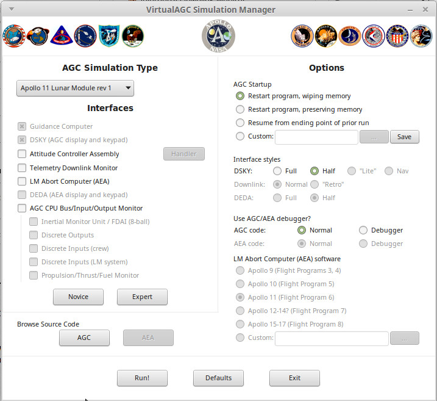
Traditionally, a larger, fancier version of the program was used if
you had a big enough display screen for it (or in latest versions of
the software, if you ran VirtualAGC with the --radio-buttons
command-line option), and it's what's shown below. This used
to be the default (or only!) version of the interface, so it's
what's used throughout much of this website for illustrative
purposes.
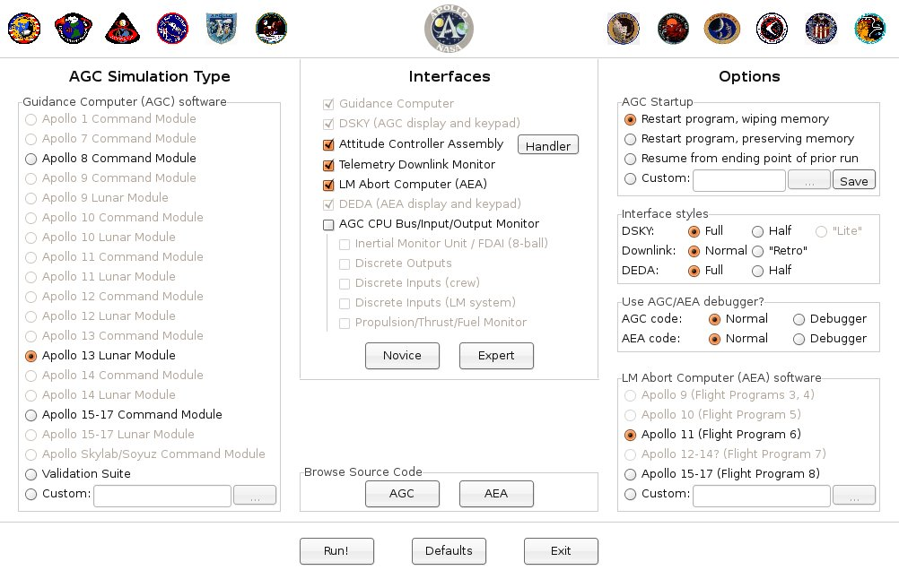
Finally, if you're really, really strapped for space — say on an
800×480 Raspberry Pi touchscreen — you can run VirtualAGC
with the --squish command-line option. This reduces the
interface to its minimal size and form:
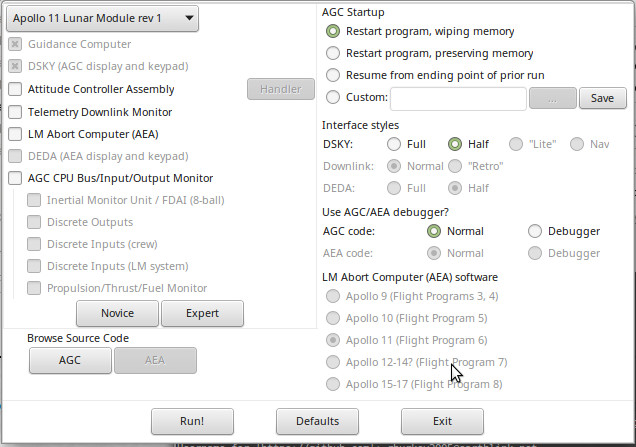
Regardless of which of the versions you use, however, the main
screen is the one and only window of the VirtualAGC program. There are no menus,
toolbars, hot-buttons, or other controls. While a large number
of options are presented, you don't necessarily need to change any
of the selected options. The defaults are as shown, and if you
simply click the "Run!" button at the bottom of the window, the
simulation will run.
Running
the Simulation
When you actually do run the simulation by hitting the "Run!"
button, the large VirtualAGC
screen shown above politely disappears in order to free up the
screen space it's using, and instead the a tiny window that looks
like this replaces it:
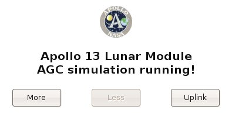
This window is gimicked to stay atop all of the other windows open
on the screen, but you can minimize it to make it disappear if you
don't like seeing it. Note, however, that while the simulation
is running you won't be able use VirtualAGC's
controls to open a new browser window for viewing the source code,
so if you want to do that you'll need to do it before hitting
"Run!".
To end the simulation, simply exit from any of the visible elements
of the simulation, such as the simulated DSKY. Within a few
seconds all of the other elements of the simulation will
automatically terminate and the large VirtualAGC window will return. On some
platforms, there may be curious exceptions to this behavior that
result in some windows needing to be explicitly manually closed, but
closing the DSKY is a good recommendation for all platforms.
The small simulation screen depicted in the screenshot above cannot
itself be closed manually, so do not expect that the simulation can
be ended by closing this screen.
We'll discuss the "More",
"Less", and "Uplink" buttons
later. You don't need to know about them for basic operation.
All
About Settings
If you change any of the settings on the VirtualAGC screen, the program will remember those
changes and the settings you've selected will be the ones that
appear the next time you run VirtualAGC.
On the other hand, you could click the "Defaults" button at the
bottom of the window to restore all of the settings to their
defaults.
There is, however, a subtle distinction between closing the VirtualAGC main window using the
"Exit" button at the bottom of the window, and using the
operating-system-supplied controls on the border of the
window. The settings are saved only when the "Exit" button is
used. They'll not be saved if the window's border controls are
used instead.
All of the settings are intelligent, in the sense that not all
settings are reasonable in combination with other settings, and so
illegal settings are grayed out and disabled. As you change
some settings, it may cause other settings to become enabled or
disabled. So it's hard to choose a combination of settings
that don't work reasonably well together.
The Simulation Type
settings
The left-hand pane of the screen is used to select the specific
software to be run on the simulated AGC. Included are all of
the versions of the Colossus and Luminary AGC programs that have been made
available to the Virtual AGC project. The grayed-out
mission/spacecraft combinations in this area are the ones for which
the original software isn't yet available, but in many cases is
known to exist in museums or private collections. But we
maintain hope that they'll eventually be made available to the
admiring public, so we put them on the list anyway!
The "Validation Suite" choice was not, of course, used in any actual
Apollo mission. However, at one time there was a software
validation suite that checked out the AGC CPU registers and
instructions for proper behavior. (I surmise that this code
was originally intended to be included in the flight software as
part of the built-in self-test, but was mostly removed due to memory
constraints.) While that software no longer exists, as far as
I know, the program documentation
for it does exist, and the Validation Suite program was
created by closely following the documentation of the original
validation suite. And a good thing, too, since in doing so a
number of implementation errors were uncovered that might have
lingered to cause mysterious problems later!
You'll also notice a box for selecting "custom" software. This
would be software you had written yourself, or perhaps acquired from
enthusiasts. Normally all of the selections in the Simulation
Type pane are expected to be executable binary code which has been
pre-assembled from source code, so if you have your own AGC source
code you'll want to read below about how to assemble it.
The
Interfaces settings
The middle pane of the screen is mostly devoted to selecting the
particular set of peripheral devices—in most cases, interfaces to
the simulated CPUs—which you wish to simulate.
Here's a brief description of all of the devices appearing in the
interface pane:
- The "Guidance Computer" is, of course, the simulated AGC CPU
which is described so thoroughly on the yaAGC program
page. We assume that you'll always want to include this in
the simulation, so we don't actually allow you to deselect it.
- And the "DSKY", of course, is the simulated display/keypad
unit which is the principal user interface to the AGC, described
on the yaDSKY or yaDSKY2 program
page. As with the AGC simulation, we assume you'll always
want a DSKY and therefore it is always selected.
- The "Attitude Controller Assembly" (ACA) is a joystick
interface simulating the LM pilot's (or more accurately, the
mission commander's) control stick in the LM. Since it is
used only for the LM, it is not selectable in a CM
simulation. The functionality is described in more detail
below in the section covering the yaACA
program.
- The "Telemetry Downlink Monitor" is an interface that lets you
see the telemetry information continually being transmitted from
the AGC to mission control. The functionality is described
below in more detail, in the section covering the yaTelemetry program.
- The "LM Abort Computer" (sometimes known as the AEA or AGS) is
computer used in the LM, but of a different design and software
than the AGC, which served to back up the AGC but only during
landing aborts. Since it appears only in the LM, it is not
selectable for CM simulations. This is described in much
more detail on the yaAGS program page.
- The "DEDA" is the display/keypad unit providing the principal
user interface to the LM abort computer, and is therefore
selectable only when "LM Abort Computer" is also selected.
In fact, we assume that if you have the abort computer, you will
definitely want the DEDA, so we don't allow you to deselect
it. It's described in more detail as the yaDEDA or
yaDEDA2 program.
- The "AGC CPU Bus/Input/Output Monitor" is an interface which
continually displays information about various i/o channels of
the AGC CPU and allows you to log the data. (Note that the
Monitor interface has a quirk which may be slightly confusing,
in that it waits about 30 seconds after the remainder of the
simulation starts up before it and its associated interfaces
listed below start up.) The Monitor is useful for either
CM or LM simulations. However, its main importance is that
it is the main window of Stephan Hotto's LM-Simulator program.
The other elements of LM-Simulator
are presently of very limited usefulness for CM simulations, and
so aren't selectable except for LM simulations, nor are they
selectable if "AGC CPU Bus/Input/Output Monitor" isn't
selected. However, any of them can be started from the
menu system in LM-Simulator
at runtime, so selecting or deselecting these elements merely
affects whether or not they are started automatically when the
simulation begins. Those other elements comprise the
remaining selections in the Interfaces pane:
- The "Intertial Measurement Unit" (IMU) provides two
important things: the IMU itself, which contintually
tracks the rotation and acceleration of the spacecraft, and
the FDAI (8-ball), which is a graphical representation for the
pilot of the spacecraft orientation.
- The "Discrete Outputs" interface continuously displays the
states of various output channels of the AGC.
- The "Discrete Inputs (crew)" interface allows setting
various signals read by the AGC on its input channels that
would normally controlled by the crew by means of switches on
the LM control panel. There is no attempt to visually
mimic the appearance of the switches or the control panel.
- The "Discrete Inputs (system)" interface allows setting
various signals read by the AGC on its input channels that
would normally be supplied by the spacecraft itself rather
than being directly controlled by the crew.
- The "Propulsion/Fuel/Thrust Monitor" interface provides a
continuous display of the current fuel supply and thruster
statuses.
You'll also notice a couple of buttons in the Interfaces pane.
The "Novice" button is a short-cut that simply deselects everything
except the minimal set of devices, namely the AGC and DSKY
simulations. Conversely, the "Expert" button is a short-cut
that selects every device that's reasonable with the spacecraft and
mission type you've selected in the "Simulation Type" pane.
The LM Abort
Computer (AEA) settings
Here you can select the specific software set which will be run on
the Abort Guidance System (AGS or AEA) simulated CPU. It would
have been more logical to include this in the "Simulation Type"
area, but alas! there's only so much space available. In the
screen-shot above, this area is completely grayed-out because the
"LM Abort computer (AEA)" box is not checked in the "Devices" area,
so the AGS/AEA simulation would not actually be run. If it
were enabled, however, any
AEA flight program to which the Virtual AGC project has been given
access could be selected. Other versions of the AEA
flight software which are believed to have existed (and hoped to
still exist) appear also on the selection list, but are disabled and
grayed out until the happy time when the Virtual AGC project
acquires access to them.
As with the AGC software selection, it's possible to select custom
software in place of actual mission software if you wished to write
your own AEA software. As with the custom AGC software, it is
expected that the software you select is a pre-assembled executable
binary. But also see below about assembling AEA source
code.
The
Options settings
The right-hand area of the screen allows you to set various minor
options associated with the exact manner in which the various
emulated devices are run. I won't bother to explain most of
these in great detail since they're pretty self-explanatory, but
here are a few words of explanation anyway:
- AGC "Restart program, wiping memory." This option
provides a completely clean boot. You should note that
this would not have been the normal behavior of a real AGC,
since the ferrite core memory of the AGC would have retained its
state in spite of power-cycling. However, it is the
appropriate default for a non-experienced user.
- AGC "Restart program, preserving memory." This option
preserves the contents of volatile memory, but not of the CPU
program counter, interrupt state, and other CPU central
registers, so the program starts from its entry vector even
though the values of all variables are preserved from the prior
run(s).
- AGC "Resume from ending point of prior run." This option
preserves not only the contents of volatile memory, but also the
CPU state, so that execution picks up from some point in the
midst of the program rather than from the entry vector. It
should be noted that neither this option nor the preceding
option can really do exactly what they claim, since the contents
of memory are not written to the Linux/Windows/Mac filesystem on
a machine-cycle to machine-cycle basis. Rather, the memory
is snapshotted at regular intervals (nominally 10 seconds), and
therefore the state of the machine is only accurate to the point
of the last snapshot.
It's important to note that
halting the simulation and then resuming it later is not
like the pause feature in a video game, because Virtual AGC
is not a computer game. The ability to resume program
execution is not something that has been layered atop the
simulation ... rather, it is simply a characteristic of the
computer memories used at that time: the AGC retained the
contents of memory across power cycles, and therefore
Virtual AGC does as well.
If your only interest is in the guidance computer itself,
then this distinction is unimportant. However, if you
are interested in the system as a whole, then the
distinction is important because it means that only the
state of the AGC is preserved, and not the state of the entire
simulation. In particular, the states of the IMU, FDAI,
propulsion system, discrete inputs, etc., from the
LM-Simulator program are not preserved. For
example, if you stopped the simulation in the middle of a
descent to the lunar surface, when you resumed it later the
AGC would think it was still in the middle of the landing,
but the orientation of the spacecraft would have changed,
the fuel tanks suddenly would be full, etc.
|
- AGC "Custom" program resumption is a more flexible form of
"Resume from ending point of prior run". Because of the
relative complexity of this option, an
entire section ("Core Dumps") is devoted to it below.
- "Full" DSKY. This is the default option when a large display
screen is available
- "Half" DSKY. This is the default option when only a
small display screen is available.
- "Lite" DSKY. This option bypasses the default DSKY
simulation provided by the yaDSKY or
yaDSKY2 program, and instead uses the DSKY simulation
provided by Stephan
Hotto's LM-Simulator program. The rationale for this
is that LM-Simulator
was at one time portable to a greater range of platforms than yaDSKY, however this is
probably no longer true, and it is likely that you will have
equal or greater luck running yaDSKY
on most platforms. Nevertheless, the option remains
available and may be useful in some cases.
- "Normal" Downlink. This is the default when a Telemetry
Downlink Monitor is selected, and has the most flexibility,
particularly with smaller display-screen sizes.
- "Retro" Downlink. This has nothing to do with
retro-rockets. It is an alternate way of displaying the
Telemetry Downlink Monitor, which somewhat resembles a CRT
display, and (to my eyes) has an amusingly pleasing retro
appearance. However, it is very wasteful of screen space,
without being resizable, and therefore is really only usable on
large display screens. The two telemetry styles are
compared side by side below. These half-size screenshots
aren't completely legible, but the difference in screen
real-estate and style is apparent; I might add that the
resizable style (if the screenshot had not been reduced by 50%)
would have been legible at an even smaller font size, and the
difference in screen real-estate would have been even more
dramatic.
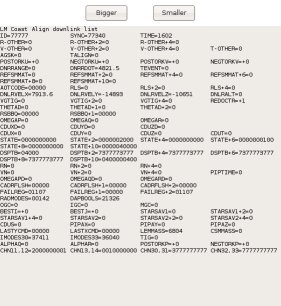
"Resizable" Telemetry
Style
|
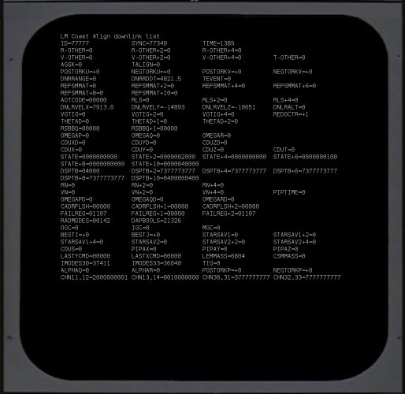
"Retro" Telemetry Style
|
- AGC "Normal". In this default mode, the simulated AGC
has no visual component at all. It exists merely to
service the peripheral devices such as the DSKY, but has no
on-screen presence.
- AGC "Debug". In this mode, the simulated AGC is run in
"debugging" mode within a terminal window, which allows
you to do such stuff to the AGC code as single-step, set
breakpoints, examine or change the values of variable,
etc. This is obviously not for casual use, but is
certainly very handy when AGC code is inoperative in some
way. It should be noted that when started in this mode a
breakpoint occurs at the first instruction encountered, so
peripherals such as the DSKY will be completely unresponsive
until the AGC program run actually is started up manually from
the debugger. In the screenshot below, I've trimmed the
image down, but the default debugging screen is quite a bit
taller.
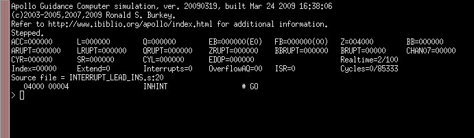
- "Normal" DEDA vs. "Half" DEDA. As with the simulated
DSKY, the simulated DEDA comes in two sizes, useful for
different display-screen sizes.
- AEA "Normal" vs. AEA "Debug". As with the simulated AGC,
the simulated AEA also has a debugger
option.
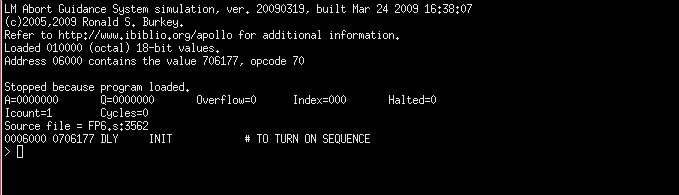
Browsing AGC or AEA
Source Code
Having chosen the AGC software suite which you wish to emulate, you
might like to actually view the software listing as well.
That's what the "AGC" button under the "Browse Source Code" heading
is for. Pressing the button displays an assembly listing for
the selected software in the default browser (such as Mozilla
Firefox, Internet Explorer, or Safari) of your computer. At
present, this won't display the Apollo 15-17 CM software, because
even though we have a verifiable executable for it, we do not yet
have the full source code. Nor will it display your custom
software, since we assume you know how to display that
yourself! However, it will show the source code for any of the
other valid software selections.
Similar comments apply to browsing the AEA source code.
Assembling AGC or AEA
Source Code
A fun thing to do (in an über-geekish way) is to write your own AGC software, just as
I have written the Validation Suite. So naturally, one of the
options mentoned above is to run your own custom
software. If you simply type a filename into the box
which is supposed to contain the filename of your custom software,
it's expected to be a binary file which has already been run through
the assembler. However, if instead of typing in a filename you
use the  button located next to the filename-entry box to
select a file by means of a file-selection dialog, you can select
either a binary file or an
AGC source-code file. If you choose an assembly-language
source file, then VirtualAGC
will thoughtfully run the yaYUL program to assemble
it for you automatically and will place the name of the binary
executable file it creates into the filename selection box.
button located next to the filename-entry box to
select a file by means of a file-selection dialog, you can select
either a binary file or an
AGC source-code file. If you choose an assembly-language
source file, then VirtualAGC
will thoughtfully run the yaYUL program to assemble
it for you automatically and will place the name of the binary
executable file it creates into the filename selection box.
Similar comments apply to selection of custom AEA programs: If
you select custom source code rather than custom binary code via the
button in the AEA-program selection area, then VirtualAGC will automatically
run the yaLEMAP program to
assemble it for you and place the name of the newly-created
executable binary in the filename selection box.
How to Create
Equivalent Command-Line Shell Scripts or Batch Files
In the small simulation window
that pops up while the simulation is running, there are two buttons
labeled "More" and "Less".
The "More" button can be used to expand the simulation window so
that it displays the contents of a shell script (or a Windows batch
file) that could be used to run the simulation from a command-line
(or by other means) without needing to invoke VirtualAGC.
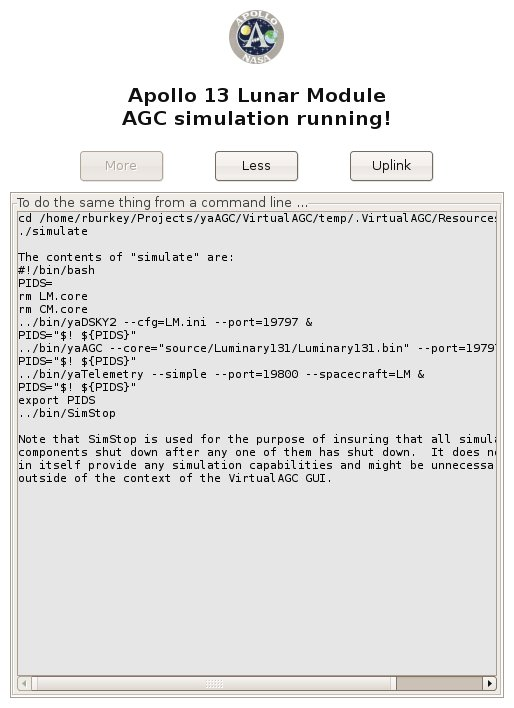
This information would also be useful to you if you wanted to create
a custom setup too complex for VirtualAGC
to handle, such as running a Command Module simulation that had two
DSKYs, or if you wanted to run the simulation on several PCs ganged
together via a network. The displayed commands can be cut-and-pasted
into a text editor for subsequent modification. Clicking the
"Less" button causes this extra display to disappear again from
view.
Not only that, but running the simulation from the command line
using scripts can be very helpful if troubleshooting needs to be
performed. In normal operation, VirtualAGC tries to hide as much complexity from you
as possible, and one thing which it hides from you is the messages
printed out by the various programs in the Virtual AGC suite.
These messages include such helpful information as socket connects
and disconnects (as the various peripheral devices try to
communicate with the simulated CPUs), and the joystick positions
being reported by the ACA simulation to the AGC. The latter
are helpful to know because there are some joystick-related
configuration differences from platform to platform and joystick to
joystick. When running the simulation directly from the
command line via a script, all of these messages become visible.
You could, of course, reconstruct all this information yourself by
examining the documentation of the various component programs, but
it's much simpler to adapt an existing script rather than to create
one from scratch.
Getting the
Simulation to a Known State
One thing that quickly becomes apparent in running the AGC
simulation is that setting up the AGC to a given state can be very
time-consuming, so it is helpful to have a method of automating that
process. VirtualAGC actually provides two separate
methods of setting up the simulated AGC to a known state:
Digital Uplinks and resumption from core-dumps. Each of these
methods has advantages and disadvantages relative to the other, so
it is not possible to provide a blanket recommendation for just one
of them. There may even be cases where a combination of the
methods is the best approach. In general, the disadvantages of
the Digital Uplink are that it is slower to use and more cumbersome
to set up than core dumps. The disadvantages of the core dump
are that although the CPU state is restored, the states of
peripheral devices are less likely to be in sync and that it is
impossible to combine core dumps (whereas it is possible to combine
different digital uplinks) containing initialization of different
subsystems.
Digital
Uplinks
Digital Uplink was a method that could be used by mission control to
transmit data to the AGC, and is the complement of the "digital
downlink" for transmitting data from the AGC to mission control
discussed in the yaTelemetry section
below.
What the digital uplink implemented was essentially a stream of DSKY
keycodes. Thus, any condition in the AGC which could be set up
via the DSKY could also be set up via digital uplink. I'm not
sure exactly how this was done in the original missions—a DSKY in
the control room? a paper tape?—but in VirtualAGC it is accomplished by creating a file
containing a script of DSKY keycodes. The digital uplink is
the single piece of functionality provided by VirtualAGC itself rather than by
other yaPrograms, so if you need a digital uplink there's presently
no way to provide it without interactively running VirtualAGC.
To send a digital uplink, you click the "Uplink" button in the simulation window, and
then select the DSKY-keycode script you'd like to use from the
file-selection dialog which pops up. Once you've done so, the
"Uplink" button changes to a "Cancel" button, and the simulation
window acquires a new pane which shows the status of the uplink in
progress:
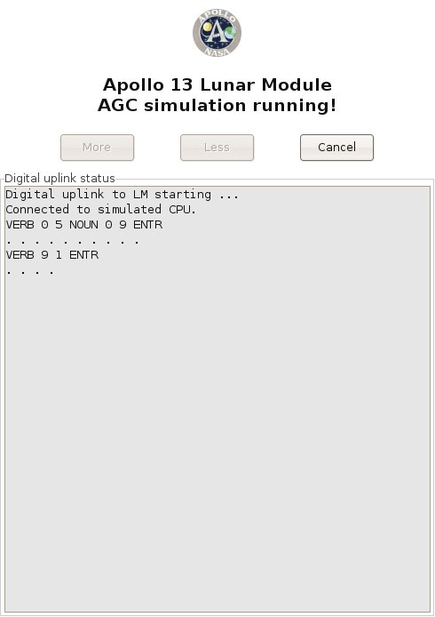
Eventually, this method may be used for uplinks to the AEA as well
as to the LM or CM AGC, but at present I don't know enough about the
uplink system for the AEA to implement it.
Here are the rulea for creating DSKY-keycode scripts for digital
uplinks to LM or CM AGC simulations:
- The type of simulation for which the uplink script is targeted
is determined by the first character in the file, namely:
- 'C' for a CM uplink.
- 'L' for an LM uplink.
- 'A' for an AEA uplink.
- Comments beginning with '#' are ignored. In other words,
everything between a '#" character and the end of the line is
ignored.
- Text strings between an '!' character and the end of line have
a special purpose that is
described later, but don't affect the uplink or the
simulation in any way.
- The following characters are translated directly into DSKY
keycodes:
- '0'—the 0-key
- '1'—the 1-key
- '2'—the 2-key
- '3'—the 3-key
- '4'—the 4-key
- '5'—the 5-key
- '6'—the 6-key
- '7'—the 7-key
- '8'—the 8-key
- '+'—the + key
- '-'—the - key
- 'V'—the VERB key
- 'N'—the NOUN key
- 'E'—the ENTR key
- 'C'—the CLR key
- 'R'—the RST key
- 'K'—the KEY-REL key
- Note that the DSKY does not report the PRO key to the AGC by
means of a keycode, so the PRO can cannot be transmitted via
digital uplink.
- Since the AGC responds to digital-uplinks just as it responds
to the DSKY, you can't assume that it responds instantly to all
uplinked commands. In other words, some delays may be
necessary to give the AGC time to process the commands it
receives. I'm not certain how this was handled in the real
hardware, but VirtualAGC
provides a two-step method for adding delays to uplink data:
- A delay of 0.2 seconds is automatically inserted by VirtualAGC between the
transmission of any two keycodes.
- Any place the space character (' ') appears in the script,
an extra delay of 0.5 seconds is inserted. (This applies
only to literal spaces, and not to other whitspace such as
tabs or newlines.)
- If the character 'Z' is placed in the script, it causes a
special code to be transmitted which clears uplink errors.
However, since it is impossible for the simulated uplink to be
corrupted as a real transmission might be, the 'Z' character
should probably never be used.
- All other characters are transparently discarded.
If you try to relate this information to the screenshot above,
showing an actual uplink in progress, it's pretty straightforward to
do so. The only point worth mentioning is that the dots
appearing in the screenshot are where additional 0.5 second delays
appeared in the script.
There are, however, a few subtleties which the rules above impose on
the scripts which may not be obvious, so let's illustrate this with
a real script:
L
# For LM
V05N09E
# Show
program alarms
"
" # Delay 5 seconds.
V91E
# Commence showing
memory-bank checksums.
"
" # Delay 5 seconds.
V33E
# Show next memory bank
"
" # Delay 5 seconds.
V33E
# Show next memory bank
"
" # Delay 5 seconds.
V33E
# Show next memory bank
"
" # Delay 5 seconds.
V33E
# Show next memory bank.
"
" # Delay 5 seconds.
V16N36E
#
Commence showing time.
"
" # Delay
5 seconds.
|
The first subtlety is that since the space character is used to
insert extra transmission delays, while the tab character is not,
and yet tabs and spaces are visually indistinguishable, it's not
immediately obvious in looking at the script where the extra delays
have been inserted. I've handled it in this script by
enclosing the spaces in quotes. The quote character is simply
discarded when the script is parsed, and so its presence causes no
harm. There are many other methods which could be used, of
course.
The second subtlety is that if you like to format the script nicely,
by doing things like aligning the comments, you'd better do so using
tab characters only or else you'll have lots of unwanted delays
added to the transmission.
The extra delay at the very end of the script has no functional
significance, but allows the status display to remain on the screen
5 seconds after transmission of the "V16N36E" command, rather than
disappearing instantly on transmission of that command. I did
this merely to make the status message readable.
Note: The AGC is not
able to properly accept digital uplinks at arbitrary times, and must
be prepared in advance to do so. I'm not sure at this writing
exactly what preparation is required, but (at least after a clean
power-up) a DSKY-test a "goto pooh" command (V37E00E) entered
directly from the DSKY keypad seems to do the trick. After the
DSKY test completes, a digital uplink is accepted.
Core Dumps
An alternative to Digital Uplinks in getting the simulated AGC CPU
to a known state is to use the method of "core dumps" instead.
As mentioned above, when the
simulated CM or LM AGC is running, it saves a snapshot of its
simulated ferrite-core memory periodically. Nominally, these
"core dump" files are saved at 10-second intervals. The
core-dump files are named "CM.core" or "LM.core", depending on
whether it is a CM or an LM simulation being run. One of the
items under the Options Settings, "Resume from ending point of prior
run", allows you to start the next simulation run with the memory
contents and CPU state of the last relevant core-dump file.
(In other words, a CM simulation can be started from the last
CM.core, and an LM simulation from the last LM.core.) Thus, to
get the AGC into a desired state you could use the DSKY to set it
up, and then resume the simulation later with those settings.
The difficulty, of course, is that after you had resumed the
simulation, execution of the simulation might result in an
alteration of your setups, so if you resumed the simulation still
later you would no longer have the same setups.
This is handled by an additional item ("Custom") in the AGC Startup
area in VirtualAGC's Option
Settings pane. What this item does is to let you save named copies of your LM.core or
CM.core files (using the "Save" button), and then to later resume
execution of the AGC simulation from your named core-dump files
rather than from the generic LM.core or CM.core files. The
core-dumps made after resumption of the simulation are still called
LM.core or CM.core, so your named core-dump file is not affected by
the continuing simulation and could still be used later to exactly
duplicate your setups.
You can make as many saved core-dump files as you like, and the area
under Options Settings allows you to either type in the name of the
file directly, or else to browse for it using the "..." button.
It is perhaps worth noting also that while LM.core and CM.core are
created automatically at 10-second intervals, if you are running AGC
under its debug monitor then you can use debug-monitor commands to
manually save core-dump files (with names of your own choosing) that
are accurate to the machine-cycle at which they are saved. By
default, VirtualAGC likes
to save and look for core-dump files in the scenarios/ folder, so if
you save core-dump files from the debugger it is best to prefix the
names with "scenario/".
Scripted
operation for tutorials, museum exhibits, and other demo purposes
(For related functionality that can be used interactively rather for
unattended operation, see the yaDSKY
page.)
The Digital Uplink capability described
above has a special feature that could be used in a variety of
instructional settings, of which a few are listed in the title of
this section. Specifically, it is possible to embed commands
in the digital upload script which cause programs of your choice to
be run when those positions in the script are reached.
Specifically, when the uplink script finds an '!' character, any
text between the '!' and the end of line is treated as a command
which would be suitably run from your operating system's
command-line.
Interesting software which might be run in this fashion includes:
- Audio-playback commands.
- Commands which pop up a window containing descriptive text.
- Commands which provide remote control of lighting or
industrial automation.
For example, you could imagine creating a tutorial on some
particular sequence of operations on the DSKY, where at each
critical point a window opened up to describe the operation that was
being performed. Or you could imagine a museum display with a
simulated DSKY on an LCD screen, and an audio commentary
synchronized to the operations being performed on the DSKY.
Here is the example digital uplink script used earlier, but with
embedded commands for audio playback using the madplay mp3-player program found
on many Linux computers:
L
# For LM
!madplay DescriptionOfProgramAlarms.mp3
V05N09E
# Show
program alarms
"
" # Delay 10
seconds.
!madplay ShowingMemoryBankChecksums.mp3
V91E
# Commence showing
memory-bank checksums.
"
" # Delay 5 seconds.
V33E
# Show next memory bank
"
" # Delay 5 seconds.
V33E
# Show next memory bank
"
" # Delay 5 seconds.
V33E
# Show next memory bank
"
" # Delay 5 seconds.
V33E
# Show next memory bank.
"
" # Delay 5 seconds.
!madplay MonitoringTimeSincePowerup.mp3
V16N36E
#
Commence showing time.
"
" # Delay
5 seconds.
|
As of yet there is no feedback to the digital uplink that could be
used to pause the uplink or branch to alternate possible uplinks,
but if anyone has a serious use for this kind of capability, I'm
sure it could be added.
Contributed
Code
LM-Simulator, by Stephan
Hotto
This is a kind of proof-of-concept program, which is in the process
of becoming an IMU simulation. It's pretty close to being
complete. But the program is useful even without a complete
IMU simulation, as a nifty little monitor for the CPU's i/o
channels. You can use it to see the output on output channels,
to generate input on input channels, or else to simply monitor or
generate arbitrary messages on the socket interface. At the
moment, it's specifically targeted towards the Lunar Module
simulation, but because there is a very great overlap between the
way peripherals like the IMU were implemented in the LM and CM, you
can profitably use LM-Simulator
with the Command Module simulation as well. Nevertheless, be
aware that not everything you see in the CM version of the program
is actually present in the CM! Also, at present the program
interacts only with the AGC simulation (yaAGC).
LM-Simulator is provided in
the Virtual AGC developer snapshot and all of the binary packages,
and is completely integrated into the VirtualAGC GUI. So you don't have to do
anything special to get it or to run it. The program is
written in the Tcl/Tk script language, however, so you do have to
have Tcl/Tk installed. Like most of the rest of Virtual AGC, LM-Simulator is licensed under
the GPL.
Here are some notes from Stephan on its use, as edited somewhat
freely by me. The program is a moving target, and I'm
combining text from a number of different emails here, so you can
blame me for any incoherence.
As a by-product [of the IMU
development] I've created a small Tcl/Tk program to monitor the
activity of the output channels and to manipulate dedicated bits
of the input channels, which is probably useful in
developing the different interfaces. Because it is written
in an interpreter language you can use it on Linux/Windows/MAC
without any change. The only pre-condition is an installed Tcl/Tk
environment. For example under LINUX you can simply type "wish
lm_simulator.tcl". [The
VirtualAGC GUI can automatically start
LM-Simulator, so you really
don't need to start it explicitly, but you can also explicitly
start it as described.]
The monitor connects to the localhost on port 19801 (IMU reserved
port) [or port 19701 for the CM] and is focused on the Luminary
131(1C) channel allocation. If you, for example, want to
simulate a "Temperature of Stable Member out of Design Limits"
then you can set the input channel 30 to "100000000000000" and the
DSKY Temperature warning will go on. [After he wrote this,
Stephan implemented a checkbox for this particular input, so it's
actually much easier than he says, but what he says here still
works.]
The program is split into the following modules which can be
called by the menu of the main program:
| lm_simulator.tcl |
Main Program for the LM
version of the program
|
lm_simulator.ini
|
The default configuration
file.
|
| AGC_Crew_Inputs.tcl |
Nearly all Crew Switches
connected to the AGC |
| AGC_Outputs.tcl |
All binary AGC outputs
interpreted by showing their status |
| AGC_System_Inputs.tcl |
All binary LM->AGC
System Inputs |
| AGC_IMU.tcl |
First steps into the IMU
& FDAI (not completely working, need some more
counters) |
AGC_Attitude.tcl
|
For manually feeding
acceleration or changes in physical attitude into the
IMU. (Eventually, of course, this will be
accomplished by modeling the thrust and rotation of the
spacecraft.)
|
AGC_DSKY.tcl
|
A DSKY simulation that can
be used in place of yaDSKY.
|
Here are some (possibly out-of-date) screenshots from the program.
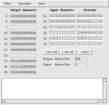
Main screen
|
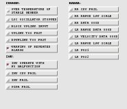
Inputs from system
|
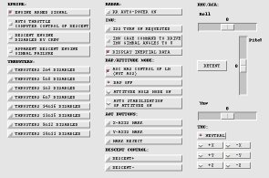
Inputs from crew
|
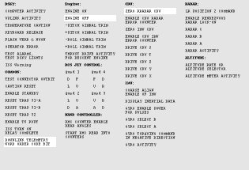
Outputs |
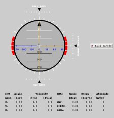
IMU
|
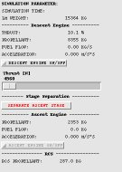
Propulsion-system status
|
|
DSKY Lite with yaDSKY
|
|
The program has a configuration file called "lm_simulator.ini" which
can be used to configure some aspects of LM-Simulator's operation. The program has
built-in configuration options, but these can be overridden with the
configuration file, which in turn can be overridden by command-line
options. I won't bother to describe this configuration file in
detail, since you'll see how it works if you look at it.
Basically, it tells you which port to use to connect to yaAGC, and determines which of LM-Simulator's windows to
automatically open at startup.
As of 2005-06-19, the usage of LM-Simulator
is as follows:
cd InstallationDirectory
lm_simulator [OPTIONS]
The currently-recognized command-line options are:
--port=PortNum
Changes the port number (by
default, 19801) used to connect to yaAGC. This can also be changed in the
configuration file.
--cfg=IniFilename
Used to change the name of the
configuration-file used. By default, the file is
lm_simulator.ini, in the installation directory. With this
option, you can change the name or directory of the file.
If you discover problems with LM-Simulator,
or want to cooperate on it, you'll probably want to contact Stephan
directly. (His contact info is in the source code.)
Game Pack, by John Pultorak
John Pultorak, of Block 1 AGC
hardware-simulator fame, has provided a Game Pack containing a 1- or
2-player tic-tac-toe game and a Simon game. This is in the
source tree under Contributed/GamePack/. Unfortunately, it
does not yet run on VirtualAGC
for a couple of reasons. If anybody cares to fix it up, I'd be
ever so grateful.
- It is written in the syntax of John's assembler rather than yaYUL, so it cannot be
assembled; and
- It depends on the presence of Colossus rather than being a standalone program,
but there is no room left in Colossus
in which to fit it.
The reason it depends on Colossus
is for such stuff as accessing the DSKY, which it could do by
directly accessing the DSKY through i/o channels.
yaUniverse
yaUniverse is a program that
physically models the motion of the spacecraft and of the heavenly
bodies visible to the spacecraft or affecting it. From knowing
the initial time, position, and velocity of the spacecraft, and
application of physical laws, yaUniverse
is able to calculate the position and orientation of the spacecraft
and heavenly bodies at all times relevant to the mission. At
present, the program exists and accounts for gravitational
influences, but is not integrated with other Virtual AGC software
such as the (currently non-existent) yaIMU program that would be the principal consumer
of the data.
Eventually, all of the forces acting on the spacecraft might be
accounted for, such as:
- (Required) Gravitation from the Earth, Moon, Sun, etc.
- (Required) Thrust applied by the spacecraft
itself. (It should be noted that thrust expends fuel, and
thus reduces the mass and the changes the inertia tensor—i.e.,
the rotational characteristics—of the spacecraft.)
- (Optional) Atmospheric drag for launch or reentry.
- ... and any other forces we might like to imagine (such as
outgassing from an exploding Apollo 13 oxygen tank).
Originally I intended not to calculate the positions of heavenly
bodies in real time, but rather to use pre-calculated or
pre-tabulated ephemeris data. However, the amount of ephemeris
data is pretty large, so I've instead decided to use the laws of
physics to track the heavenly bodies as well as the
spacecraft. Note that the initial
positions and velocities of the heavenly bodies still need to be
obtained somehow, but they can simply be gotten for any given
mission epoch by downloading them from the Jet Propulsion
Laboratory's HORIZONS system at
telnet ssd.jpl.nasa.gov 6775
I'll do all of the downloading, of course, though at present
(2004-09-23) I include only Apollo 8 data in the development
snapshot.
An additional complication is that even though I've spoken above of
"the spacecraft", there is not just a single spacecraft.
Rather, there several spacecraft, which at any given time in the
mission may be docked or separated: the CM, the SM, the LM's
descent stage, the LM's ascent stage, the Saturn stages, and various
combined versions of these. The motion of each must be
tracked. For example, it may be necessary in the course of the
mission for the the astronaut to use the CSM's AOT (see below) to
mark the position of the LM. yaUniverse provides the data for this to yaAOT, and thus must be able to
simultaneously track the CSM and the LM.
Like yaAGC, yaUniverse would be a server
from which yaIMU and yaAOT obtain data. A TCP
socket interface is used for this, though the data protocol is
presently TBD.
yaUniverse requires no user
interface, other than a way to define the starting time, positions,
velocities, and physical characteristics of the spacecraft.
However, it would be convenient to have at least some kind of
running printout of positions, velocities, orientations, and masses.
The barest beginning of yaUniverse
exists. It is presently capable only of numerically
integrating the positions of the heavenly bodies and spacecraft, but
not of communicating this information to yaAGC.
The syntax is:
yaUniverse [OPTIONS]
The recognized options are:
--help
Displays textual info similar to
that shown here.
--mission=Name
Selects the name of the mission,
which determines the initial positions of the Earth, Moon, Sun,
Venus, Mars, Jupiter, and Saturn for the mission, and thus the
gravitational influences on the spacecraft. The mission
names, by convention, are "Apollo8" (without quotes), "Apollo9",
etc. The default is "Apollo8". The actual ephemeris
files used have names like "Ephemeris-Earth-Apollo8.txt",
"Ephemeris-Moon-Apollo8.txt", and "Ephemeris-Sun-Apollo8.txt", but
this is transparent to the user. The Apollo8 mission is
special, in that it contains complete ephemeris data (rather than
mere initial conditions) and hence can be used for testing yaUniverse's ability to
perform numerical integrations of planetary positions.
--ephem-read
Causes yaUniverse to display ephemeris data and then
quit. It's purpose is really just to test that it can
correctly read ephemeris files. It forces --mission=Apollo8.
--ephem-int
Causes yaUniverse to print a report testing its numerical
integration algorithms and then quit. It forces
--mission=Apollo8. Specifically, what it does is this:
From the initial positions and velocities of the supported
heavenly bodies (Earth, Moon, Sun, Jupiter, etc.), it computes
locations of all heavenly bodies for the complete Apollo 8 mission
epoch. It then compares these with the pre-tabulated
ephemeris. Only the error in the Earth/Moon positions is
really interesting, since that's the region of space in which the
Apollo spacecraft operated. At present, with the default settints,
the cumulative error in Earth/Moon positions at the end of the
9-day epoch is about 0.35 km (which I consider acceptable, but
which I'd like to improve in the future).
--runge-kutta=N
The order of the Runge-Kutta
numerical integration. N=2 or 4 (default is 4).
--planets=N
The number of planetary bodies used
in the numerical integration.
N=3-15, and is 7 by
default:
N=3 Earth,
Moon, and Sun.
N=4
Same as N=3, plus Jupiter.
N=5
Same as N=4, plus Saturn.
N=6
Same as N=5, plus Venus.
N=7
Same as N=6, plus Mars.
N=11
Same as N=7, plus Ganymede, Io, Europa, &
Callisto.
N=15
Same as N=11, plus Titan, Tethys, Rhea, & Dione.
The addition of Titan
et al.
makes a big difference in the error of Saturn's position, but has
no obvious effect on the inner solar system. Similar
comments apply to Galileans and their effects on Jupiter and the
inner solar system. Mercury and Uranus also have no obvious
effect at all.
Note:
If the Galileans are added, you will need to adjust the timestep
(see below) downward, say to 7200, to account for the very short
orbital periods of some satellites.
--timestep=T
The time, in seconds, used as the
timestep for the numerical integration when only gravitational
effects present, and the spacecraft are not close to the planetary
bodies. The default is 6 hours (21600 seconds). The
value must be either an exact divisor or exact multiple of
3600. Intermediate values (at times between the timesteps)
are obtained by interpolation.
yaIMU
Since
Stephan Hotto's contributed LM-Simulator
program provides an IMU, a separate yaIMU program is no
longer planned. However, if you're interested in
providing one, feel free to proceed. (Independent
implementations are always useful for verification.)
|
yaAOT
yaAOT would be a simulation
of the Alignment Optical Telescope (AOT). yaAOT would be a client of both
the yaAGC and yaUniverse servers.
From the orientation of the spacecraft (obtained from yaUniverse), and from the
orientation of the telescope with respect to the spacecraft (which
is initially driven by yaAGC),
yaAOT would be able to
compute the direction which the telescope is pointing. From
starcharts, it would be able to display a star-field on the
PC. The astronaut could then manually adjusts the orientation
of the telescope (i.e, the star-field) to point at the objects he is
attempting to mark; these objects could be stars, reference points
such as the Earth horizon, or the other spacecraft—i.e., the LM or
CM. The new orientation of the telescope could then read back
by yaAGC.
No work on this program has yet been done, other than researching
available star data. Star-data is available online and, as
nearly as I can tell, the Centre
de Données astronomiques de Strasbourg
is the
generally-recognized place from which to download
them.
yaACA, yaACA2, and yaACA3
The Attitude Controller Assembly (ACA)—also known as the rotational
hand-controller (RHC)—is used by astronaut to affect the pitch,
roll, and yaw of the LM. José Portillo has described the
interaction between the ACA and AGC in great detail in a paper (klabs.org/mapld04/papers/g/g202_portillo_p.pdf)
which is the basis of all ACA-related work in Virtual AGC.
Refer to the developer
page and to the assembly-language
manual if you're interested in knowing more about the
integration between the ACA simulation and yaAGC. Note that yaAGC retransmits any
input-channel data received from the ACA simulation, so other
onboard devices (such as yaAGS)
wishing to receive RHC data automatically receive this data even
though not connected to the ACA simulation.
In Virtual AGC, the ACA is simulated by one of three essentially
equivalent programs called (surprise!) yaACA, yaACA2,
and yaACA3. Since you
are unlikely have an actual
ACA unless you're very, very lucky indeed, the simulated ACA instead
uses a 3D joystick like that used for many computer games. The
ACA simulation interacts with the joystick and sends the simulated
AGC CPU information related to the displacement of the joystick from
its neutral position.
Why three separate programs? Well, it has turned out to be
much more difficult (for me, anyway!) to write a joystick program
that I can be confident works on all supported platforms than it has
been to make sure that the remainder of Virtual AGC is portable
across platforms. Therefore, as time went on, I found the need
to experiment and to create several such programs.
Technically, the three programs differ in using different underlying
libraries (not written by me) to access the joystick, but what's
important to you as a user is that if one of the yaACAx
programs doesn't work for your operating system or joystick, another
might. So I pass all of them along to you and let you choose.
At the present time, yaACA3
is regarded as the default and best of the programs, since it
appears to work on all supported platforms. yaACA2 presently does not work
on Mac OS X and yaACA
presently does not work properly on Windows. Neither yaACA nor yaACA2 works on FreeBSD, or at
least I haven't jumped through whatever hoops might be needed to
make them work.
As far as joystick selection is concerned, I use a Logitech Extreme
3D Pro, and all configuration defaults have been tailored for that
model. In theory, any twist-handle joystick should be usable,
though possibly with some reconfiguration. Only the most basic
3D joystick is needed, since only 3 degrees of freedom (roll, pitch,
and yaw) are used, and no buttons are used.
Selection between yaACA, yaACA2, and yaACA3 and reconfiguration
related to different joystick models can be done from a command-line, but to me that
seems to be making a difficult chore even more difficult than it
needs to be. So I've provided a GUI front-end (jWiz) for this chore, as
described in the next section.
jWiz, the GUI
front-end for joystick configuration
As mentioned above, three separate joystick-handler programs are
provided, and we hope that
by default the best one of them is automatically used by VirtualAGC and that the default
joystick settings of that joystick-handler program are
correct. But what if they're not? Then you have to do a
little work to correct the joystick settings. On the VirtualAGC main screen, you may
have noticed an unexplained button labeled "Handler":
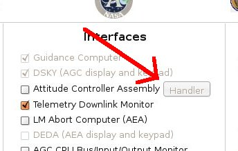
In the screenshot above, this
button is disabled because the "Attitude Controller Assembly"
checkbox is empty. If it was checked, then the button
would be enabled, and if you clicked the button a screen like
this would appear:
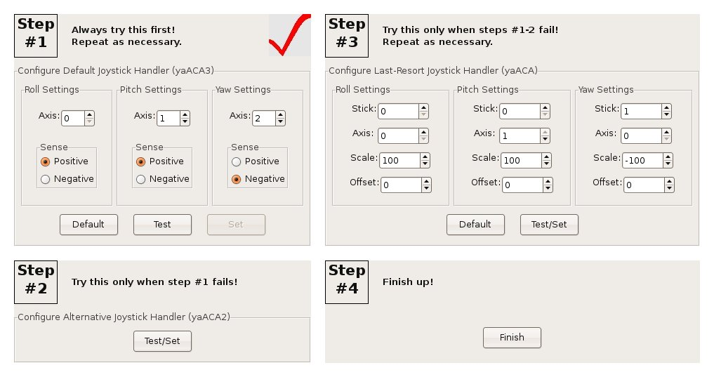
This is the main screen for a program jWiz, which helps guide you through the joystick
reconfiguration process. At "Step #1", "Step #2", and "Step
#3" you can configure one of the three joystick handlers. You
only need to configure one of them, since only one of them can be
used by the simulation at any given time. Step #1 is the
preferred handler, and if it doesn't work for you then you can
proceed to the next-best handler at Step #2, and if that doesn't
work for you then you can proceed to the fallback handler at Step
#3. Not all of these steps will necessarily be available to
you, since some of the handlers don't work on some operating
systems, and therefore may be grayed out and disabled.
The big red checkmark on "Step #1" indicates that the primary
joystick-handler is currently set and will be used by VirtualAGC. If you change
the setup, then the checkmark moves to a different handler.
Wherever there is a "Default" button, you can use it to restore the
settings for that handler to their original defaults. Wherever
there is a "Test/Set" button, it allows you to both test the
joystick configuration for that handler and (at the same time) set
it for use by VirtualAGC.
Where there are separate "Test" and "Set" buttons, it means that the
settings for that handler can be tested without selecting that
handler for use by VirtualAGC,
and that you have to click the "Set" button as an extra step after
testing.
When you click one of the "Test" or "Test/Set" buttons, one of the
following windows will open up:
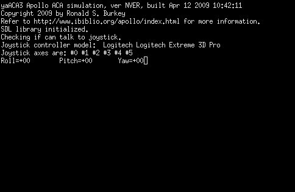
Step #1: Configuring
yaACA3
|
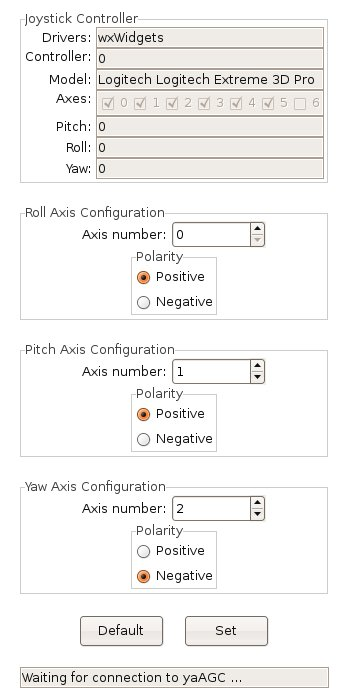
Step #1: Configuring
yaACA2 |
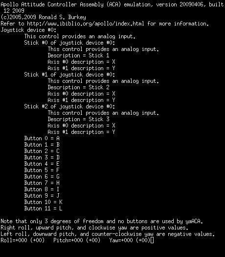
Step #1: Configuring
yaACA |
You'll notice, I'm sure, that yaACA2,
which had no adjustable parameters on the main jWiz screen, has adustable
parameters as well as "Default" and "Set" buttons, so all three
handlers have effectively the same kinds of adjustments. One
difference is that yaACA3
and yaACA2 have only two
adjustable parameters ("Axis number"/"Axis" and "Polarity"/"Sense")
while yaACA has four
adjustable parameters ("Stick", "Axis", "Scale", and
"Offset"). Thus, yaACA
is harder to configure than the others, which is part of the reason
the others are preferred.
But the three handlers are all similar in that they display the
current pitch, roll, and yaw readings. The aim is to find an
appropriate combination of settings so that:
- Maximum left roll is -57.
- Maximum right roll is +57.
- Maximum downward pitch is -57.
- Maximum upward pitch is +57.
- Maximum right yaw is -57.
- Maximum left yaw is +57.
You can experiment with the settings directly in yaACA2 (by hitting the "Set"
button for every combination of settings you want to test), but in yaACA3 or yaACA you need to exit and
return to jWiz every time
you want to change the settings. In Mac OS X, by the
way, these screens are shown to you inside of a program called Terminator, and you need to exit
Terminator from its main
menu.
For most joysticks, you should find that the pitch and roll settings
are correct, or very nearly so, but that there is less certainty
about the yaw settings. Therefore, I'll discuss only how to
change the yaw settings; for the pitch and roll settings, the
principles are identical. Here is the procedure I'd recommend:
- If there is no movement of the joystick that can cause the yaw
value to change, then it probably means the wrong axis is
set. In yaACA3
and yaACA2, the
joystick has a collection of axes, identified as 0, 1, 2,
.... The numbering is a little different in yaACA, where the joystick
has a collection of "sticks" 0, 1, 2, ..., each one of which has
two "axes" 0 and 1. For example, if you look at the yaACAx screenshots above,
you'll see that my Logitech Extreme 3D Pro has either 6 axes or
else 3 sticks of two axes each. Nevertheless, the
principle is the same. Any given axis (or stick/axis)
provides only a single reading—in other words, if it was used
for roll or pitch, it wouldn't provide a yaw reading—so step
through the unused axes (or stick/axis pairs) until you find the
one whose readings change with yaw. If there is no such
setting, try a different joystick handler.
- If the sense of an axis is wrong—i.e., if the yaw increases
where it should decrease and vice versa—then the "Polarity" or
"Sense" of yaACA3 or yaACA2 is wrong, or the
algebraic sign of the "Scale" is wrong for yaACA. Change plus to
minus or minus to plus.
- If the readings are not symmetric about zero—e.g., if the
readings were 0 to 255 rather than -128 to +127—then the
"Offset" in yaACA is
wrong. Change the Offset to equal the center of the range
you are observing. (This problem cannot occur in yaACA3 or yaACA2, so there is no
adjustment needed for them.)
- If the size of the range is wrong—e.g., if the reading varies
from -128 to 127 rather than from -57 to +57—then the "Scale" in
yaACA is wrong.
The Scale is a multiplier in units of 0.01, so a Scale of 100
has no effect, a Scale less than 100 (in magnitude) decreases
the size of the range, and a Scale greater than 100 increases
the size of the range. (Again, this problem cannot occur
in yaACA3 or yaACA2, so there is no
adjustment needed for them.)
Once you're all done configuring
within jWiz, a partial
double-check can be made by running the simulation itself after
doing this configuration. One of the items in the LM
telemetry display is the current octal value of input channel 31,
part of which indicates the direction (but not the magnitude) of
displacement of the ACA from its detent. The last two octal
digits are:
- 75 for pitch down
- 76 for pitch up
- 37 for roll left
- 57 for roll right
- 73 for yaw left
- 67 for yaw right
So you should be able to move the joystick and see the downlink
telemetry change accordingly, keeping in mind of course that the
telemetry downlink occurs at several-second intervals and so the
telemetry display can't respond instantly to joystick movements.
How the selection
and configuration process works
If you wish to bypass jWiz
for some reason, and to configure joysticks from the command line,
it's certainly possible to do so. The principle involved is
that each of the three programs yaACA,
yaACA2, and yaACA3 store their configuration
parameters in files (respectively, yaACA-0.cfg, yaACA2-0.cfg, and
yaACA3-0.cfg). These configuration parameters are selected by
the yaACA2 GUI or from the
command-line for yaACA/yaACA3, but once safely stored
in the configuration files the command-line parameters are no longer
needed. (The details of the command-line parameters are
described in the following 3 sections.) What VirtualAGC does
is simply to choose which yaACAx program is needed on
the basis of what configuration files it finds:
- If yaACA2-0.cfg exists, then yaACA2
is used; otherwise,
- If yaACA-0.cfg exists, then yaACA
is used; otherwise,
- yaACA3 is used,
whether or not yaACA3-0.cfg exists. (If yaACA3-0.cfg
doesn't exist, then yaACA3
uses its own built-in configuration defaults.)
Creating the configuration files is a matter of running the
appropriate yaACAx program
with the desired command-line switches. Getting rid of
configuration files is a simple matter of deletion. However,
actually running the appropriate yaACAx
program isn't always so simple because you have to be in the proper
working directory, and have to supply the proper path for the
program, as follows:
- From a command line, 'cd' to VirtualAGC's
working directory. This happens to be the directory in
which the configuration files mentioned above are stored.
If you have installed in the default locations, the command will
be:
- In Linux or FreeBSD:
cd
~/VirtualAGC/Resources
- In Windows: cd "\Program Files\Virtual
AGC\Resources"
- In Mac OS X:
cd
~/Desktop/VirtualAGC.app/Contents/Resources
- Attach your 3D joystick.
- Run yaACA, yaACA2, and yaACA3 with your chosen
command-line options. The only relevant options are
--pitch, --roll, and --yaw, as described below for yaACA
or for yaACA3. yaACA2 needs no switches, since you select the
options from its own built-in GUI. The appropriate command
lines will be:
- In Linux:
- ../bin/yaACA
--pitch=... --roll=... --yaw=...
- ../bin/yaACA2
- ../bin/yaACA3
--pitch=... --roll=...
--yaw=...
- In FreeBSD:
- yaACA will not
work.
- yaACA2 will not
work.
- ../bin/yaACA3
--pitch=... --roll=...
--yaw=...
- In Windows:
- yaACA will pretend
to work here, but don't try it since it won't actually work
with the simulation.
- ..\bin\aACA2
- ..\bin\yaACA3
--pitch=... --roll=...
--yaw=...
- In Mac OS X:
- ../MacOS/yaACA
--pitch=... --roll=...
--yaw=...
- yaACA2 will not
work.
- ../MacOS/yaACA3
--pitch=... --roll=...
--yaw=...
- Experiment with the pitch, roll, and yaw switches. (Note
that to change the
switches in yaACA or yaACA3, you need to exit the
program and re-run it. To exit, hit the Ctrl-C key on your
keyboard. On Mac OS X, you will also need to close the Terminator program from its
menu.) You need to try different combinations until you
see the following readings printed out when moving the joystick:
- Maximum left roll is -57.
- Maximum right roll is +57.
- Maximum downward pitch is -57.
- Maximum upward pitch is +57.
- Maximum right yaw is -57.
- Maximum left yaw is +57.
Note that yaACA2 and yaACA3 display joystick
readings as translated to the range acceptable to the AGC (namely, -57-+57). yaACA differs in that it shows both the raw readings
obtained from the joystick (usually 0-255 or else -128-+128) and the translated
readings. The latter will appear in parentheses following
the former, and are the ones which you need to check.
A partial double-check can be made by running the simulation
itself after doing this configuration. One of the items in
the LM telemetry display is the current octal value of input
channel 31, part of which indicates the direction (but not the
magnitude) of displacement of the ACA from its detent. The
last two octal digits are:
- 75 for pitch down
- 76 for pitch up
- 37 for roll left
- 57 for roll right
- 73 for yaw left
- 67 for yaw right
Finally, note that (in theory) multiple joystick controllers could
be attached to the computer, and that each of the yaACAx programs allows access to
these different joystick controllers. The configuration files
are separate for the different joystick controllers so that (for
example) if joystick controller 1 was used, then the configuration
files would have a name like yaACA3-1.cfg rather than
yaACA3-0.cfg. However, VirtualAGC
make no such provision: it always assumes that joystick
controller 0 is used. Therefore, to use a different controller
you will have to bypass VirtualAGC
and use your own startup procedure for the simulation.
Command-line
usage of yaACA3
The syntax is:
yaACA3 [OPTIONS]
The recognized options are:
--help
Displays textual info similar to
that shown here.
--roll=N
--pitch=N
--yaw=N
These options allow you to
configure how the roll/pitch/yaw degrees of freedom map to the
"axes" of the joystick as recognized by the computer's operating
system. In general, the operating system views a 3D joystick
as possessing a certain number of axes, identified as axis 0, axis
1, etc. I deduce from my readings that axis 0 will almost
always correspond to roll and axis 1 will almost always correspond
to pitch. However, the axis used for yaw is likely to
vary. For example, I have seen cases where it is 2 and cases
where it is 3. I have chosen defaults based strictly on my
own convenience (i.e., for my Logitech Extreme 3D pro joystick),
and I have no theoretical basis for assuming that they'll work for
you. In addition to choosing which axis belongs to which
degree of freedom, these command-line switches also allow you to
choose the sense.
For example, you may indeed find that axis 1 corresponds to pitch,
but that it pitches up where you expect it to pitch down, and
vice-versa. In this case, simply put a minus sign before the
number, as in "--pitch=-1". (And if you have to do this for
axis 0, don't worry: "--roll=-0" treated differently than
"--roll=0"!)
--ip=Hostname
The yaACA3 program and the yaAGC Apollo Guidance Computer simulation exist in
a "client/server" relationship, in which the yaACA3 program needs to be
aware of the IP address or symbolic name of the host computer
running the yaAGC
program. By default, this is "localhost", meaning that both
yaACA3 and yaAGC are running on the same
computer.
--port=Portnumber
By default, yaACA3 attempts to connect to
the yaAGC program using
port number 19803. However, if more than one instance of yaACA3 is being run, or if yaAGC has been configured to
listen on different ports, then different port settings for yaACA3 are needed. Note
that by default, yaAGC
listens for new connections on ports 19697-19706, but that the
recommended port range when using yaAGC in the LM is 19797-19806.
--delay=Milliseconds
Adds a delay at start-up, so that
yaACA does not immediately
begin attempting to communicate with
yaAGC. The current defaults are 0 ms. in
Linux/Mac OS X and 500 ms. in Win32. This "feature" has been
added as a temporary work-around for
problem
report #23, and probably has no other sensible
purpose. Even on Win32 it isn't usually needed, but it's
here for the 10% (or whatever) of the time it's needed.
In case more than one joystick
controller is attached to the PC/Mac, this allows selection of
just one of them. The default is N=0.
Command-line usage of
yaACA2
The syntax is:
yaACA2 [OPTIONS]
The recognized options are:
--help
Displays textual info similar to
that shown here.
--ip=Hostname
The yaACA3 program and the yaAGC Apollo Guidance Computer simulation exist in
a "client/server" relationship, in which the yaACA3 program needs to be
aware of the IP address or symbolic name of the host computer
running the yaAGC
program. By default, this is "localhost", meaning that both
yaACA3 and yaAGC are running on the same
computer.
--port=Portnumber
By default, yaACA3 attempts to connect to
the yaAGC program using
port number 19803. However, if more than one instance of yaACA3 is being run, or if yaAGC has been configured to
listen on different ports, then different port settings for yaACA3 are needed. Note
that by default, yaAGC
listens for new connections on ports 19697-19706, but that the
recommended port range when using yaAGC in the LM is 19797-19806.
--delay=Milliseconds
Adds a delay at start-up, so that
yaACA does not immediately
begin attempting to communicate with
yaAGC. The current defaults are 0 ms. in
Linux/Mac OS X and 500 ms. in Win32. This "feature" has been
added as a temporary work-around for
problem
report #23, and probably has no other sensible
purpose. Even on Win32 it isn't usually needed, but it's
here for the 10% (or whatever) of the time it's needed.
In case more than one joystick
controller is attached to the PC/Mac, this allows selection of
just one of them. The default is N=0.
Command-line usage of yaACA
The syntax is:
yaACA [OPTIONS]
The recognized options are:
--help
Displays
textual info similar to that shown here.
--roll=J,S,A,F,O
--pitch=J,S,A,F,O
--yaw=J,S,A,F,O
These options
allow you to configure how the roll/pitch/yaw degrees of freedom
map to the characteristics of the joystick as recognized by the
computer's operating system. J is the joystick device
number (in case multiple joystick devices are installed), S is
the stick number within the joystick, and A is
the axis within the stick. F is a factor which the joystick
reading is multiplied by, and O is an offset added to the
joystick reading (after multiplication is completed). The
factor is useful (for example) in swapping right-to-left,
back-to-front, or clockwise-to-counter-clockwise. The offset
would be useful when the the joystick provides unsigned readings
(0-255) rather than the desired signed readings (-127 to
127). A reading of -127 represents maximum left roll,
downward pitch, or counter-clockwise yaw; a reading of +127
represents maximum right roll, upward pitch, or clockwise
yaw. (Actually, maximum values of 127 seem to occur in
Linux, whereas maximum values of 128 seem to occur in
Win32.) The defaults are:
Roll = 0, 0, 0, 1.0, 0
Pitch = 0, 0, 1, 1.0, 0
Yaw = 0, 1, 0, 1.0, 0 (Linux) or 0, 1, 0, 1.0, -128 (Win32) or
0,2,0,1.0,0 (Mac OS X)
These defaults are based strictly
on my own convenience (i.e., for my Logitech Extreme 3D pro),
and I have no theoretical basis for assuming that they're any
good generally. Incidentally, the explanation above would
seem to imply that you could theoretically use different
joystick controllers for different axes; you really can't.
--ip=Hostname
The yaACA program and the yaAGC Apollo Guidance Computer
simulation exist in a "client/server" relationship, in which the yaACA program needs to be
aware of the IP address or symbolic name of the host computer
running the yaAGC
program. By default, this is "localhost", meaning that both
yaACA and yaAGC are running on the same
computer.
--port=Portnumber
By default, yaACA attempts to connect to
the yaAGC program using
port number 19803. However, if more than one instance of yaACA is being run, or if yaAGC has been configured to
listen on different ports, then different port settings for yaACA are needed. Note
that by default, yaAGC
listens for new connections on ports 19697-19706, but that the
recommended port range when using yaAGC in the LM is 19797-19806.
--delay=Milliseconds
Adds
a delay at start-up, so that yaACA does not immediately begin attempting to
communicate with yaAGC.
The current defaults are 0 ms. in Linux and 500 ms. in
Win32. This "feature" has been added as a temporary
work-around for problem report #23, and probably has no other sensible
purpose. Even on Win32 it isn't usually needed, but it's
here for the 10% (or whatever) of the time it's needed.
yaTelemetry
In normal use the AGC periodically transmitted telemetry information
which was displayed on monitors in Mission Control. Naturally
the virtual yaAGC
periodically transmits telemetry data as well, using virtual radio
waves, and with appropriate software to simulate a ground-based
receiver it is possible to view this information. The
characteristics of the digital uplink and downlink can be explored
by reading section 2 of the Guidance
System Operations Plan (GSOP) for the LM or the CM. The data consists
of a conglomeration of many of the internal state variables used by
the AGC, and is capable of conveniently giving a much more detailed
picture of the state of the AGC and of the spacecraft than the AGC
can give to the astronauts.
Prior to the creation of a dedicated yaTelemetry program, I cobbled telemetry-viewing
capability onto the yaDSKY
program, even though it is completely unrelated functionality.
If yaDSKY is started with
the switches "--test-downlink"
and/or "--test-uplink", then you can use it to view the
digital downlinks or to create uplink data, respectively.
Using yaDSKY in this way
has several drawbacks. One drawback is that some people like
to use an alternate DSKY simulation (such as the "DSKY Lite" built
into Stephan Hotto's LM-Simulator described
above), rather than to use yaDSKY,
and in those cases yaDSKY
isn't present. Another drawback is that to see the downlink
data, yaDSKY must be
started in a console of an appropriate size and on some platforms
(Windows, Mac OS X 10.4) this is either not possible, or else (Mac
OS X 10.5) not possible without running the X-window system.
yaTelemetry, on the other
hand, is a dedicated program that does nothing other than to provide
a monitor for displaying telemetry information downlinked from the
AGC.
The accompanying photo is actually not a photo of a mission-control
CRT; rather, it is a screen capture from the "Apollo 11" episode of
the great HBO mini-series From
the Earth to the Moon. You can appreciate the care
that the creators of the show must have taken with this, since many
of the items on the screen clearly do relate to downlinked
data. If you enlarge the image by clicking on it, and squint
at the upper left-hand corner of the display, you'll note that it
refers to LM099; Luminary
version 099 was the AGC software build used for Apollo 11.
Nevertheless, however convincing the film-makers' art was, this
display does not seem to match any of the documented records we've
found of the appearance of the actual mission control CRT
displays. At present, what you get with yaTelemetry (or yaDSKY) is simply a list of all
variables and their values appearing in the downlinked data
stream. I hope to provide more accurate display formats in the
future.
In addition to telemetry downlinks—i.e., reception by ground control
of data from the AGC—digital uplinks are also possible.
Uplinks were (and continue in the virtual system to be) handled by
the simple expedient of transmitting DSKY
keycodes, encoded in a triply-redundant format to allow detection of
errors. The AGC flight software treats DSKY and uplink
keycodes in a very similar fashion, so ground control could remotely
perform any task which the astronaut could perform at the DSKY
keypad, including data entry, entry of short program patches into
memory, and activation of programs. At the present time, yaTelemetry doesn't attempt to
duplicate this uplink capability, but VirtualAGC does
provide a handy mode for uplinking. Also, the
"--test-uplink" switch for yaDSKY
causes keycodes to be transmitted to the AGC via the digital-uplink
data-stream rather than via the virtual wiring it normally uses, and
thus provides a proof-of-concept that the uplink is implemented
correctly. It would be interesting to know what kind of
equipment mission control used for this purpose. Perhaps they
used an actual DSKY.
But enough about yaDSKY
already! As far as yaTelemetry
is concerned, the usage-syntax is:
yaTelemetry [OPTIONS]
The recognized options are:
--help
Displays textual info similar to
that shown here.
--delay=Milliseconds
Adds a delay at start-up, so that yaTelemetry does not
immediately begin attempting to communicate with yaAGC. The current
defaults are 500 ms. in Win32 and 0 ms. otherwise (Linux/Mac OS
X).
--ip=Hostname
The yaTelemetry program and the yaAGC Apollo Guidance Computer
simulation exist in a "client/server" relationship, in which the yaTelemetry program needs to
be aware of the IP address or symbolic name of the host computer
running the yaAGC
program. By default, this is "localhost", meaning that both
yaTelemetry and yaAGC are running on the same
computer.
--port=Portnumber
By default, yaTelemetry attempts to
connect to the yaAGC
program using port number 19800. However, if more than one
instance of yaTelemetry
is being run, or if yaAGC
has been configured to listen on different ports, then different
port settings for yaTelemetry
are needed. Note that by default, yaAGC listens for new connections on ports
19697-19706, which is the recommended range for virtual CM
equipment, but that the recommended port range when using yaAGC for the LM is
19797-19806. Thus, yaTelemetry would normally used either
with port 19800 (LM) or 19700 (CM).
--spacecraft=CM
--spacecraft=LM
Self-explanatory, I think.
--font-size=Points
The yaTelemetry display window is not provided in a
way that allows it to be resized. This means that if
downlink data does not fit within the display window, the only
option is to change the size of the text, and not to change the
size of the window. The default font size is chosen with the
expectation that adjustment isn't needed. However, it's
possible that the default won't be appropriate on some platforms,
so adjustment can be achieved via the --font-size switch.
Because of platform variations, the default size actually varies
from platform to platform (Linux, Windows, Mac) and according to
whether or not the --simple switch (see below) is used.
--undecorated
yaTelemetry
is gimicked-up to look something like a CRT display.
However, this takes a lot of space on the computer screen, and you
may be unwilling to expend the extra space needed to achieve this
retro appearance. The --undecorated switch removes the
decorations, and reduces the telemetry display to little more than
a rectangle filled with text. If the screen size is too
small to display the decorations, this switch is activated
automatically and so you do not need to do so manually.
Also, the switch is always in effect in Mac OS X, because the
decorated display has not (yet) been made to work correctly.
--simple
Although by default yaTelemetry displays its
downlink-data within a console intended to resemble a CRT, and
although the --undecorated switch is available to remove that
decorative trimming, the --simple switch is probably a better
choice in practice. The --simple switch overrides both the
default and the --undecorated mode to provide a simple textual
display with no flourishes except for two buttons which can
enlarge the font size or decrease it. The size of the
display is always automatically adjusted so that the downlink data
always appears within it without scrollbars being needed,
regardless of the font size. I would recommend always using
the --simple switch in place of the defaults.
This page is available under the Creative
Commons No Rights Reserved License
Last modified by Ronald Burkey on
2018-03-04.


{kind=link}
{kind=link}
{kind=link}
{kind=link}
{kind=link}
{kind=link}